高二物理寒假作业一
电势差1．对于电场中A、B两点，下列说法正确的是( )
A．电势差的公式UAB＝q，说明两点间的电势差UAB与电场力做功WAB成正比，与移动电荷的电荷量q成反比
B．把正电荷从A点移到B点电场力做正功，则有UAB＞0
C．电势差的公式UAB＝q中，UAB与移动电荷量q无关
D．电场中A、B两点间的电势差UAB等于把正电荷q从A点移动到B点时电场力所做的功
电场线2．在如图所示的四种电场中，分别标记有a、b两点．其中a、b两点电场强度大小相等、方向相反的是（ ）
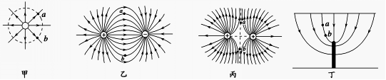
A．甲图中与点电荷等距的a、b两点
B．乙图中两等量异种电荷连线的中垂线上与连线等距的a、b两点
C．丙图中两等量同种电荷连线的中垂线上与连线等距的a、b两点
D．丁图中非匀强电场中的a、b两点
电场知识综合运用3．如图所示，实线为电场线，虚线为带电粒子（重力不计）的运动轨迹，电场中A、B两点的电势分别为φA、φB，粒子在A、B两点的速度大小分别为vA、vB，加速度大小分别为aA、aB，电势能分别为EpA、EpB，则下列正确的是（ ）
A．φA＜φB B．vA＞vB C．aA＞aB D．EpA＜EpB
电场知识综合运用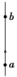4．如图所示，a、b为竖直向上的电场线上的两点，一带电质点在a点由静止释放，沿电场线方向向上运动，到b 点恰好速度为零，下列说法中正确的是( )
A．带电质点在a、b两点受到的电场力都是竖直向上的
B．a点的电势比b点的电势低
C．带电质点在a点的电势能比在b点的电势能小
D．a点的电场强度比b点的电场强度小
电容器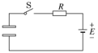5．两块大小、形状完全相同的金属平板平行放置，构成一平行板电容器，与它相连接的电路如图所示，接通开关S，电源即给电容器充电( )
A．保持S接通，减小两极板间的距离，则两极板间电场的电场强度减小
B．保持S接通，在两极板间插入一块介质，则极板上的电荷量增大
C．断开S，减小两极板间的距离，则两极板间的电势差减小
D．断开S，在两极板间插入一块介质，则两极板间的电势差增大
电场知识综合运用6．如图所示，水平放置的平行板间的匀强电场正中间P点有一带电微粒正好处于静止状态，如果把平行带电板瞬时改为竖直放置，带电微粒的运动将是( )
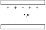A．保持静止状态
B．从P点开始做自由落体运动
C．从P点开始做平��运动
D．从P点开始做初速度为零，加速度为g的匀加速直线运动
电场知识综合运用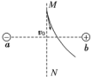7．如图所示，a、b带等量异种电荷，MN为ab连线的中垂线，现有一个带电粒子从M点以一定初速度v0射出，开始时一段轨迹如图中实线所示，不考虑粒子重力，则在飞越该电场的整个过程中以下说法错误的是( )
A．该粒子带正电
B．该粒子的动能先增大后减小
C．该粒子的电势能先减小后增大
D．该粒子运动到无穷远处后，速度的大小仍为v0
电势能8．如图所示，A、B、C为电场中同一电场线上的三点.设电荷在电场中只受电场力作用，则下列说法中正确的是（ ）
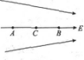A．若在C点无初速地释放正电荷，则正电荷向B运动，电势能减少
B．若在C点无初速地释放正电荷，则正电荷向A运动，电势能增加
C．若在C点无初速地释放负电荷，则负电荷向A运动，电势能增加
D．若在C点无初速地释放负电荷，则负电荷向B运动, 电势能减少
电势与等势面9．将一个正点电荷从无穷远处移到电场中A点，电场力做功为4×10-9J，将一负点电荷（带电量与上述正点电荷相等）从无穷远处移到电场中的B点，克服电场力做功为8×10-9J，则下述结论中正确的是
A．jA＜jB＜0 B．jB＞jA＞0 C．jB＜jA＜0 D．jA＞jB＞0
电场能的性质综合运用10．如图所示，虚线为静电场中的等势面1、2、3、4，相邻的等势面之间的电势差相等，其中等势面3的电势为零。一带正电的点电荷在静电力的作用下运动，经过a、b点时的动能分别为30 eV和6 eV。当这一点电荷运动到某一位置，其电势能变为-5 eV时，它的动能应为（ ）
A．11 eV B．15 eV C．19 eV D．24 eV
电场知识综合运用11．如图所示，在沿水平方向的匀强电场中有一固定点O，用一根长度为l＝0.40 m的绝缘细线把质量为m＝0.20 kg，带有正电荷的金属小球悬挂在O点，小球静止在B点时细线与竖直方向的夹角为θ＝37°。现将小球拉至位置A使细线水平后由静止释放，求：
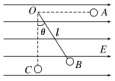(1)小球运动通过最低点C时的速度大小；
(2)小球通过最低点C时细线对小球的拉力大小。(g取10 m/s2)
电场知识综合运用12．如图所示，在匀强电场中，将一电荷量为C的正电荷由A点移到B点，其电势能减少了0.1J，已知A、B两点间距离为2cm，两点连线与电场方向成600角，求：
（1） 电荷由A移到B的过程中，电场力所做的功WAB；
（2） A、B两点间的电势差UAB；
（3） 该匀强电场的电场强度E。
高二物理寒假作业二
库仑定律1．有三个相同的金属小球A、B、C，其中A、B两球带电情况相同，C球不带电．将A、B两球相隔一定距离固定起来，两球间的库仑力是F，若使C球 先和A接触，再与B接触，移去C，则A、B间的库仑力变为（ ）
A． B． C． D．
电场力的性质综合运用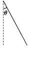2.如图所示，在匀强电场中将一个电荷量为q，质量为m的小球由静止释放，小球的运动轨迹为一直线，此直线与竖直方向的夹角为θ，则场强的最小值是（ ）
A． B．
C． D．
电场知识综合运用3．一个点电荷从电场中的a点移到b点，其电势能变化为零，则（ ）
A．a、b两点的场强一定相等
B．a、b两点的电势一定相等
C．该点电荷一定沿等势面移动
D．作用于该点电荷的电场力与移动方向总是保持垂直
电场能的性质综合运用4．在静电场中，一个电子由a点移到b点时电场力做功为5eV，则以下认识中错误的是（ ）
A．电场强度的方向一定由b沿直线指向a．
B．a、b两点间电势差Uab=5V．
C．电子的电势能减少5eV．
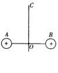 D．电子的电势能减少5J．
电场知识综合运用5．如图所示，A、B为两个固定的正点电荷，电荷量相等，OC为AB的垂直平分线，O为AB的中点，另一个重力不计的正点电荷q，原来静止在O点，现使它稍向上移动很小距离后释放，它将沿OC直线运动，在它运动过程中（ ）
A．电势能逐渐变小 B．速度逐渐变大
C．速度先变大后变小 D．所受电场力先变大后变小
电场知识综合运用6．如图有两个完全相同的金属球a、b，b固定在绝缘地板上，a在离b高H的正上方，由静止释放与b发生碰撞后回跳高度为h。设碰撞中无动能损失，空气阻力不计，则（ ）
A、若a、b带等量同种电荷，则H>h ；
B、若a、b带等量同种电荷，则H<h ；
C、若a、b带等量异种电荷，则H<h ；
D、若a、b带等量异种电荷，则H=h 。
电场知识综合运用7.如图所示，在竖直放置的光滑半圆弧绝缘细管的圆心O处固定一点电荷，将质量为m，带电量为+q的小球从圆弧管的水平直径端点A由静止释放，小球沿细管滑到最低点B时，对管壁恰好无压力，则固定于圆心处的点电荷在A B弧中点处的电场强度大小为（ ）
A．mg/q
B．2mg/q
C．3mg/q
D．4mg/q
电场知识综合运用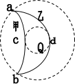8、如图所示，在正点电荷Q形成的电场中，已知ab两点在同一等势面上，重力不计的甲、乙两个带电粒子的运动轨迹分别为acb和adb曲线，两个粒子经过a点时具有相同的动能，下列判断错误的是（ ）
A、甲粒子经过c点时与乙粒子经过d点时具有相同的动能
B、甲、乙两个粒子带异号电荷
C、两粒子经过b点时具有相同的动能
D、两粒子经过b点时具有相同的速度
电场知识综合运用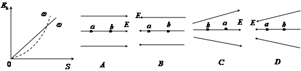9、有一个负点电荷只受电场力的作用，分别从两电场中的a点由静止释放，在它沿直线运动到b点的过程中，动能EK随位移s变化的关系图象如左下图中的①、②图线所示，则能与图线相对应的两个电场的电场线分布图分别是下图中的（ ）
电容器10．一个电容器的规格是“50V ，10μF”，则（ ）
A．这个电容器加上50V电压时，电容量才是10μF．
B．这个电容器的最大电容量是10μF，带电量较少时，电容量小于10μF．
C．这个电容器上加的电压不能低于50V．
D．这个电容器的电容量总等于10μF．
电场知识综合运用11、如图所示，边长为L的正方形区域abcd内存在着匀强电场。电量为q、动能为Ek的带电粒子从a点沿ab方向进入电场，不计重力。
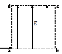（1）若粒子从c点离开电场，求电场强度的大小和粒子离开电场时的动能；
（2）若粒子离开电场时动能为Ek’，则电场强度为多大？
电场知识综合运用12、在金属板A、B间加上如图乙所示的大小不变、方向周期性变化的交变电压Uo，其周期是T。现有电子以平行于金属板的速度vo从两板中央射入。已知电子的质量为m，电荷量为e，不计电子的重力，求：
（1）若电子从t=0时刻射入，在半个周期内恰好能从A板的边缘飞出，则电子
飞出时速度的大小。
（2）若电子从t=0时刻射入，恰能平行于金属板飞出，则金属板至少多长？
（3）若电子恰能从两板中央平行于板飞出，电子应从哪一时刻射入，两板间距
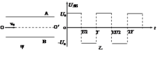至少多大？
高二物理寒假作业三
电动势1．有关电压与电动势的说法中正确的是( )
A．电压与电动势的单位都是伏特，所以电动势与电压是同一物理量的不同叫法
B．电动势就是电源两极间的电压
C．电动势公式E＝q中W与电压U＝q中的W是一样的，都是电场力做的功
D．电动势是反映电源把其他形式的能转化为电能本领大小的物理量
电功率与热功率2. 把标有“220 V,100 W”的A灯和“220 V,200 W”的B灯串联起来，接入220 V的电路中，不计导线电阻及温度变化而引起的灯丝电阻变化，则下列判断中正确的是 ( )
A. 两灯的电阻之比RA∶RB＝2∶1
B. 两灯的实际电压之比UA∶UB＝2∶1
C. 两灯实际消耗的功率之比PA∶PB＝1∶2
D. 在相同时间内，两灯实际发热之比QA∶QB＝1∶2
电路知识综合运用3. 关于闭合电路的性质，下列说法正确的是( )
A. 外电路断路时，路端电压最高
B. 外电路短路时，电源的功率最大
C. 外电路电阻变大时，电源的输出功率变大
D. 不管外电路电阻怎样变化，其电源的内、外电压之和保持不变
串联电路与并联电路4..在高速公路隧道内两侧的电灯泡不易更换，为了延长电灯泡的使用寿命，一个接口处通常安装两个完全相同的灯泡，（考虑温度对电阻的影响）,下列说法正确的是( )
A. 两个灯泡串联
B. 两个灯泡并联
C. 每个灯泡实际消耗的功率是其额定功率的四分之一
D. 每个灯泡实际消耗的功率大于其额定功率的四分之一
纯电阻与非纯电阻电路5. 如图所示的电路中，输入电压U恒为12 V，灯泡上标有“6 V 12 W”字样，电动机线圈的电阻RM＝0.50 Ω.若灯泡恰能正常发光，以下说法中正确的是( )
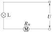A．电动机的输入功率为24 W
B．电动机的输出功率为12 W
C．电动机的热功率为2.0 W
D．整个电路消耗的电功率为22 W
电路知识综合运用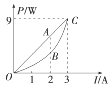6．如图所示，直线OAC为某一直流电源的总功率P总随电流I变化的图象，抛物线OBC为同一直流电源内部热功率Pr随电流I变化的图象，若A，B对应的横坐标为2 A，那么AB段表示的功率及I＝2 A对应的外电阻是( )
A．2 W 0.5 Ω
B．4 W 2 Ω
C．2 W 1 Ω
D．6 W 2 Ω
电路知识综合运用7.在如图所示的图象中，直线Ⅰ为某一电源的路端电压与电流的关系图象，直线Ⅱ为某一电阻R的伏安特性曲线．用该电源直接与电阻R相连组成闭合电路. 由图象可知( )
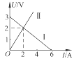A. 电源的电动势为3 V，内阻为0. 5 Ω
B. 电阻R的阻值为1 Ω
C. 电源的输出功率为2 W
D. 电源的效率为66.7 %
电路故障分析8. 如图所示为一电路板的示意图，a、b、c、d为接线柱，a、d与220 V的交流电源连接，ab间、bc间、cd间分别连接一个电阻．现发现电路中没有电流，为检查电路故障，用一交流电压表分别测得b、d两点间以及a、c两点间的电压均为220 V．由此可知( )
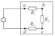A. bc间电路通，cd间电路通
B. ab间电路不通，bc间电路通
C. ab间电路通，bc间电路不通
D. bc间电路不通，cd间电路通
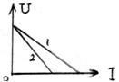
闭合电路欧姆定律9．如图为两个不同闭合电路中两个不同电源的I—U图象，则下述说法正确的是（ ）
A．电动势E1=E2，发生短路时的电流强度I1＞I2
B．电动势E1=E2，内阻r1＞r2
C．电动势E1=E2，内阻r1＜r2
D．当两个电源工作电流变化量相同时，电源2的路端电压变化较大
电路的动态分析10．如图，A、B两灯电阻相同，当滑动变阻器的滑动端P向下滑动时（ ）
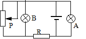A、通过电源的电流减小
B、电阻R中的电流减小
C、电灯A将变暗一些
D、电灯B将变暗一些
纯电阻与非纯电阻电路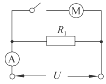11 如图所示，电阻R1＝20 Ω，电动机内阻的阻值R2＝10 Ω.当开关打开时，电流表的示数是I0＝0.5 A，当开关合上后，电动机转动起来，电路两端的电压不变，电流表的示数I和电路消耗的电功率P应是 ( )
A. I＝1.5 A B. I＜1.5 A C. P＝15 W D. P＜15 W
电路的动态分析 12、如图所示，电键K闭合，电流表、电压表均为理想电表，若电阻R1断路，则下列说法中正确的是( )
12、如图所示，电键K闭合，电流表、电压表均为理想电表，若电阻R1断路，则下列说法中正确的是( )
A．电流表示数变小
B．电压表示数变小
C．电源内电路消耗的功率变大
 D．R3消耗的功率变大
D．R3消耗的功率变大
电路中的功率极值分析13.如图所示，电池组的电动势为ε，内电阻为r，R0为定值电阻，R为变阻器，已知R0＞r.为使R0上消耗的电功率最大，应将变阻器阻值调整到( ).
A．R0 B．R0＋r C．R0－r D．0
电功率与热功率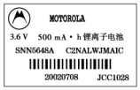14．一块手机电池的背面印有如图所示的一些符号，另外在手机使用说明书上还写有“通话时间3 h，待机时间100 h”，则该手机通话和待机时消耗的功率分别约为( )
A．1.8 W,5.4×10－2 W
B．3.6 W,0.108 W
C．0.6 W, 1.8×10－2 W
D．6.48×103 W,1.94×102 W
电路故障分析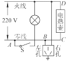15. 某居民家中的电路如图所示，开始时各部分工作正常，将电饭煲的插头插入三孔插座后，正在烧水的电热壶突然不能工作，但电灯仍正常发光. 拔出电饭煲的插头，把试电笔分别插入插座的左、右插孔，氖管均能发光，则( )
A. 仅电热壶所在的C、D两点间发生了断路故障
B. 仅电热壶所在的C、D两点间发生了短路故障
C. 仅导线AB间断路
D. 因为插座用导线接地，所以发生了上述故障
电路的动态分析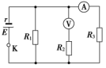16．在如图所示的电路中，R1、R2和R3皆为定值电阻，电源的电动势为E，内阻为r.设理想电流表A的读数为I，理想电压表V的读数为U.当R1发生断路时( )
A．I变大，U变小，R3的功率不变
B．I变大，U变小，R3的功率增大
C．I变小，U变大，R3的功率增大
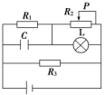D．I变小，U变小，R3的功率减小
电路的动态分析17．如图所示，当滑动变阻器R2的滑片P向左滑动时，下列说法不正确的是( )
A．电阻R3消耗的功率变大
B．电容器C上的电荷量变大
C．灯L变暗
D．R1两端的电压变化量的绝对值小于R2两端的电压变化量的绝对值
电路的动态分析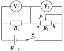18．如图所示电路中，电源内阻不能忽略，两个电压表均为理想电表．当滑动变阻器R2的滑动触头P移动时，关于两个电压表V1与V2的示数，下列判断正确的是( )
A．P向a移动，V1示数增大、V2的示数也增大
B．P向b移动，V1示数增大、V2的示数减小
C．P向a移动，V1示数改变量的绝对值小于V2示数改变量的绝对值
D．P向b移动，V1示数改变量的绝对值大于V2示数改变量的绝对值
电路的动态分析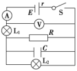19．如图所示的电路中，闭合开关S，灯泡L1和L2均正常发光，由于某种原因灯泡L2灯丝突然烧断，其余用电器均不会损坏，则下列结论正确的是( )
A．电流表读数变大，电压表读数变小
B．灯泡L1变亮
C．电容器C上电荷量减小
D．电源的输出功率可能变大
电路知识综合运用20. 某同学将一直流电源的总功率PE、输出功率PR和电源内部的发热功率Pr随电流I变化的图线画在同一坐标系中，如图中的a、b、c所示．则下列说法中正确的是( )
A．图线b表示输出功率PR随电流I变化的关系
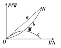B．图线a最高点对应的功率为最大输出功率
C．在a、b、c三条图线上分别取横坐标相同的A、B、C三点，这三点的纵坐标一定满足关系PA＝PB＋PC
D．b、c线的交点M与a、b线的交点N的纵、横坐标之比一定为1∶2
高二物理寒假作业四
实验：测电阻基本知识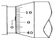1．读数练习
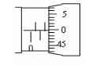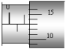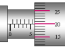
实验：描绘小灯泡的伏安特性曲线2.某同学在做测定小灯泡功率的实验中得到如下一组U和I的数据：
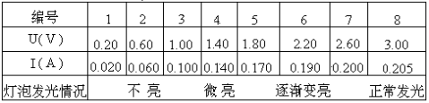
①在图上画出I－U图线．
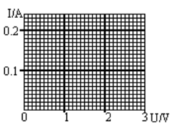②从图线上可以看出，当功率逐渐增
大时，灯丝电阻的变化情况是：
_______________________________．
③这表明导体的电阻随温度
升高而_________________________．
实验：描绘小灯泡的伏安特性曲线3.某课外学习小组想描绘标有“4 V、2 W”的小灯泡的U—I图象,除导线和开关外还备有以下器材可供选择:
A.电流表(量程0.6 A,内阻约为1 Ω)
B.电流表(量程3.0 A,内阻约为0.2 Ω)
C.电压表(量程5.0 V,内阻约为5 kΩ)
D.电压表(量程15.0 V,内阻约为15 kΩ)
E.滑动变阻器(最大阻值为200 Ω,额定电流100 mA)
F.滑动变阻器(最大阻值为10 Ω,额定电流1.0 A)
G.电源(电动势为6.0 V,内阻约为1.5 Ω)
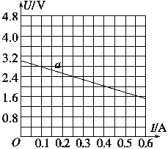
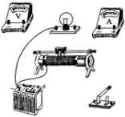
(1)实验中所用的电流表应选 ;电压表选 ; 滑动变阻器应选 .(只需填器材前面的字母代号)
(2)将图4中的实物连接成实验所需的电路(有两根导线已经接好).实验开始时,滑动变阻器的滑片应该置于最 端.(填“左”或“右”)
(3)经过正确的操作,测得的数据如下表:
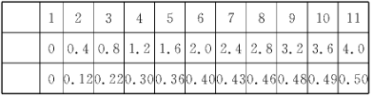
请在上图中描点画出小灯泡的U—I曲线.
(4)若某干电池的端电压U与电流I的关系如上图中图线a所示,那么将本题中的小灯泡接在该干电池的两端时,小灯泡的实际功率是 W.
实验：测定电源的电动势和内电阻4 在“用电流表和电压表测电池的电动势和内电阻”的实验中,提供的器材有:
A.干电池一节
B.电流表(量程0.6 A)
C.电压表(量程3 V)
D.电键S和若干导线
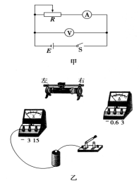 E.滑动变阻器R1(最大阻值20 Ω,最大电流1 A)
F.滑动变阻器R2(最大阻值300 Ω,最大电流0.5 A)
G.滑动变阻器R3(最大阻值1 000 Ω,最大电流0.1 A)
(1)①按如图甲所示电路测量干电池的电动势和内电阻,滑动变阻器应选 (填写代号).
②为使测量尽可能精确,将如图乙所示的实物图连接成实验电路(已连接了部分线),要求变阻器的滑动触头滑至最右端时,其使用电阻值最大.
(2)实验步骤:
①按实验要求连接好电路.闭合电键前把变阻器的滑动触头滑至一端,使接入电路的阻值最大.
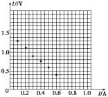②闭合电键,调节滑动变阻器,使 的指针有明显偏转,读取 和 的示数.用同样方法测量多组数据.
③断开电键,整理好器材.
④数据处理.
(3)将实验测得的数据标在如图所示的坐标图中,请作出U—I图线,由此求得待测电池的电动势E= V,内电阻r= Ω.(结果保留三位有效数字)
实验：万用电表的原理与实用5. (1)用多用表的欧姆挡测量阻值约为几十千欧的电阻Rx,以下给出的最可能的实现操作步骤,其中S为选择开关,P为欧姆挡调零旋钮，把你认为正确的步骤前的字母按合理的顺序填写在下面的横线上.
a.将两表笔短接,调节P使指针对准刻度盘上欧姆挡的0刻度,断开两表笔
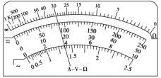 b.将两表笔分别连接到被测电阻的两端,读出Rx的阻值后,断开两表笔
c.旋转S使其尖端对准欧姆挡×1 k
d.旋转S使其尖端对准欧姆挡×100
e.旋转S使其尖端对准交流500 V挡,并拔出两表笔
.
根据图所示指针位置,此时被测电阻的阻值约为 Ω.
(2)下述关于用多用表欧姆挡测电阻的说法中正确的是( )
A.测量电阻时,如果指针偏转过大,应将选择开关S 拨至倍率较小的挡位,重新调零后测量
B.测量电阻时,如果红、黑表笔分别插在负、正插孔,则会影响测量结果
C.测量电路中的某个电阻,应该把该电阻与电路断开
D.测量阻值不同的电阻时,都必须重新调零
实验：测金属丝的电阻率6 如图所示,甲图为一段粗细均匀的新型导电材料棒,现测量该材料的电阻率.
(1)首先用多用电表的欧姆挡(倍率为×10)粗测其电阻,指针位置如图乙所示,其读数R= .
(2)然后用以下器材用伏安法尽可能精确地测量其电阻
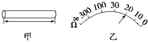A.电流表:量程为0.6 A,内阻约为0.1 Ω
B.电压表:量程为3 V,内阻约为3 kΩ
C.滑动变阻器:最大阻值为20 Ω,额定电流1 A
D.低压直流电源:电压6 V,内阻忽略
E.电键S,导线若干
在下面的虚线方框中画出实验电路图.
(3)如果实验中电流表示数为I,电压表示数为U,并测出该棒的长度为L、直径为d,则该材料的电阻率ρ= (用测出的物理量的符号表示).
高二物理寒假作业五
与洛伦兹力有关的常见仪器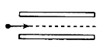1. 如图，在两水平极板间存在匀强电场和匀强磁场，电场方向竖直向下，磁场方向垂直于纸面向里，一带电粒子以某一速度沿水平直线通过两极板，若不计重力，下列四个物理量中哪一个改变时，粒子运动轨迹不会改变（ ）
A.粒子速度的大小 B.粒子所带的电荷量
C.电场强度 D.磁感应强度
磁场对电流的作用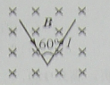2、 如图，长为的直导线拆成边长相等，夹角为的形，并置于与其所在平面相垂直的匀强磁场中，磁感应强度为，当在该导线中通以电流强度为的电流时，该形通电导线受到的安培力大小为
（）0
（B）0.5
（C）
（D）
磁场对电流的作用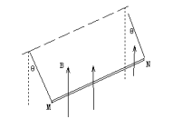3. 如图所示，金属棒MN两端由等长的轻质细线水平悬挂，处于竖直向上的匀强磁场中，棒中通以由M向N的电流，平衡时两悬线与竖直方向夹角均为 ，如果仅改变下列某一个条件，
，如果仅改变下列某一个条件， 角的相应变化情况是
角的相应变化情况是
A.棒中的电流变大，角变大
B.两悬线等长变短， 角变小
角变小
C.金属棒质量变大， 角变大
角变大
D.磁感应强度变大， 角变小
角变小
洛伦兹力作用下的圆周运动4.处于匀强磁场中的一个带电粒子，仅在磁场力作用下做匀速圆周运动。将该粒子的运动等效为环形电流，那么此电流值
A 与粒子电荷量成正比 B 与粒子速率成正比
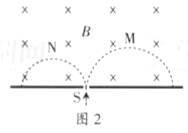C与粒子质量成正比 D与磁感应强度成正比
带电粒子在有界磁场中的圆周运动5.质量和电量都相等的带电粒子M和N，以不同的速度率经小孔S垂直进入匀强磁场，运行的半圆轨迹如图2种虚线所示，下列表述正确的是
A．M带负电，N带正电
B.M的速度率小于N的速率
C.洛伦磁力对M、N做正功
D.M的运行时间大于N的运行时间
带电粒子在复合场中的运动6. 如图所示，圆形区域内有垂直于纸面向里的匀强磁场，一个带电粒子以速度从 点沿 直径方向射入磁场，经过
点沿 直径方向射入磁场，经过 时间从点射出磁场，与成60°角。现将带电粒子的速度变为/3，仍从点沿原方向射入磁场，不计重力，则粒子在磁场中的运动时间变为( )
时间从点射出磁场，与成60°角。现将带电粒子的速度变为/3，仍从点沿原方向射入磁场，不计重力，则粒子在磁场中的运动时间变为( )
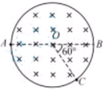A.
B.2 
C. 
D.3
带电粒子在有界磁场中的圆周运动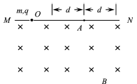7.如图所示,MN 是磁感应强度为B 的匀强磁场的边界. 一质量为m、电荷量为q 的粒子在纸面内从O 点射入磁场. 若粒子速度为v0,最远能落在边界上的A 点. 下列说法正确的有
A 若粒子落在A 点的左侧,其速度一定小于v0
B 若粒子落在A 点的右侧,其速度一定大于v0
C 若粒子落在A 点左右两侧d 的范围内,其速度不可能小于v0-qBd/2m
D若粒子落在A 点左右两侧d 的范围内,其速度不可能大于v0+qBd/2m
磁感应强度8. 如图，两根互相平行的长直导线过纸面上的M、N两点，且与直面垂直，导线中通有大小相等、方向相反的电流。a、o、b在M、N的连线上，o为MN的中点，c、d位于MN的中垂线上，且a、b、c、d到o点的距离均相等。关于以上几点处的磁场，下列说法正确的是
A.o点处的磁感应强度为零
B.a、b两点处的磁感应强度大小相等，方向相反
C.c、d两点处的磁感应强度大小相等，方向相同
D.a、c两点处磁感应强度的方向不同
与洛伦兹力有关的常见仪器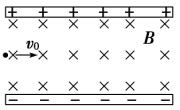9．如图所示，两平行、正对金属板水平放置，使上面金属板带上一定量正电荷，下面金属板带上等量的负电荷，再在它们之间加上垂直纸面向里的匀强磁场，一个带电粒子以初速度v0沿垂直于电场和磁场的方向从两金属板左端中央射入后向上偏转．若带电粒子所受重力可忽略不计，仍按上述方式将带电粒子射入两板间，为使其向下偏转，下列措施中一定不可行的是( )
A．仅增大带电粒子射入时的速度
B．仅增大两金属板所带的电荷量
C．仅减小粒子所带电荷量
D．仅改变粒子的电性
与洛伦兹力有关的常见仪器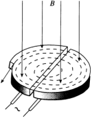10．回旋加速器是加速带电粒子的装置，其核心部分是分别与高频交流电源两极相连接的两个D形金属盒，两盒间的狭缝中形成周期性变化的电场，使粒子在通过狭缝时都能得到加速，两D形金属盒处于垂直于盒底的匀强磁场中，如图所示。设D形盒半径为R。若用回旋加速器加速质子时，匀强磁场的磁感应强度为B，高频交流电频率为f。则下列说法正确的是
A．质子被加速后的最大速度不可能超过2πfR
B．质子被加速后的最大速度与加速电场的电压大小无关
C．只要R足够大，质子的速度可以被加速到任意值
D．不改变B和f，该回旋加速器也能用于加速α粒子
带电粒子在复合场中的运动11.如图所示的装置，左半部为速度选择器，右半部为匀强的偏转电场。一束同位素离子流从狭缝S1射入速度选择器，能够沿直线通过速度选择器并从狭缝S2射出的离子，又沿着与电场垂直的方向，立即进入场强大小为E的偏转电场，最后打在照相底片D上。已知同位素离子的电荷量为q (q＞0)，速度选择器内部存在着相互垂直的场强大小为E0的匀强电场和磁感应强度大小为B0的匀强磁场，照相底片D与狭缝S1、S2连线平行且距离为L，忽略重力的影响。
（1）求从狭缝S2射出的离子速度v0的大小；
（2）若打在照相底片上的离子在偏转电场中沿速度v0方向飞行的距离为x，求出x 与离子质量m之间的关系式(用E0、B0、E、q、m、L 表示)。
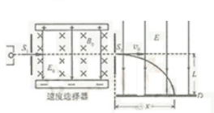
带电粒子在复合场中的运动12.如图9所示,在x>0的空间中,存在沿x轴方向的匀强电场,电场强度E=10 N/C;在x<0的空间中,存在垂直xOy平面方向的匀强磁场,磁感应强度B=0.5 T.一带负电的粒子(比荷q/m=160 C/kg),在x=0.06 m处的d点以v0=8 m/s的初速度沿y轴正方向开始运动,不计带电粒子的重力.求：
(1)带电粒子开始运动后第一次通过y轴时的速度大小和方向;
 (2)带电粒子进入磁场后经多长时间返回电场;
(2)带电粒子进入磁场后经多长时间返回电场;
(3)带电粒子运动的周期.
高二物理寒假作业六
磁场对电流的作用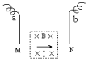１. 一根有质量的金属棒MN，两端用细软导线连接后悬挂于a、b两点．棒的中部处于方向垂直纸面向里的匀强磁场中，棒中通有电流，方向从M流向N，此时悬线上有拉力．为了使拉力等于零，可以( )
A．适当减小磁感应强度
B．使磁场反向
C．适当增大电流强度
D．使电流反向
磁场对电流的作用2. 两条长直导线AB和CD相互垂直，彼此相隔一很小距离，通以图所示方向的电流，其中AB固定，CD可以其中心为轴自由转动或平动，则CD的运动情况是（ ）
A．顺时针方向转动，同时靠近导线AB
B．顺时针方向转动，同时离开导线AB
C．逆时针方向转动，同时靠近导线AB
D．逆时针方向转动，同时离开导线AB
磁场对电流的作用3. 如图所示，三根通电长直导线P、Q、R互相平行且通过正三角形的三个顶点，三条导线中通入的电流大小相等、方向垂直纸面向里；通过直导线产生磁场的磁感应强度B=kI/r,I为通电导线的电流大小，r为距通电导线的垂直距离，k为常量；则通电导线R受到的磁场力的方向是（ ）
A．垂直R，指向y轴负方向
B．垂直R，指向y轴正方向
C．垂直R，指向x轴负方向
D．垂直R，指向x轴正方向
带电粒子在有界磁场中的运动4．如图 ，在一水平放置的平板MN的上方有匀强磁场，磁感应强度的大小为B，磁场方向垂直于纸面向里。许多质量为m带电量为+q的粒子，以相同的速率v沿位于纸面内的各个方向，由小孔O射入磁场区域。不计重力，不计粒子间的相互影响。带电粒子可能经过的区域的面积是（ ）
A. B.
C. D.
与洛伦兹力有关的常见仪器5. 一束几种不同的正离子, 垂直射入正交的匀强磁场和匀强电场区域里, 离子束保持原运动方向未发生偏转. 接着进入另一匀强磁场, 发现这些离子分成几束如图. 对这些离子, 可得出结论 ( )
A.它们的动能一定各不相同
B.它们的电量一定各不相同
C.它们的质量一定各不相同
D.它们的荷质比一定各不相同
磁场对电流的作用6．如图所示，一水平导轨处于与水平方向成45°角向左上方的匀强磁场中，一根通有电流的金属棒，由于受到安培力作用而在粗糙的导轨上向右做匀速运动。现将磁场方向沿顺时针缓慢转动至竖直向上，在此过程中，金属棒始终保持匀速运动，导体棒中电流保持不变，已知棒与导轨间动摩擦因数μ<1，则磁感应强度B的大小变化情况是（ ）
A．不变
B．一直增大
C．一直减小
D．先变小后变大
磁场知识综合运用7. 如图，空间存在水平向左的匀强电场和垂直纸面向里的匀强磁场，电场和磁场相互垂直。在电磁场区域中，有一个竖直放置的光滑绝缘圆环，环上套有一个带正电的小球。O点为圆环的圆心，a、b、c为圆环上的三个点，a点为最高点，c点为最低点，Ob沿水平方向。已知小球所受电场力与重力大小相等。现将小球从环的顶端a点由静止释放。下列判断正确的是（ ）
A．当小球运动的弧长为圆周长的1/2时，洛仑兹力最大
B．当小球运动的弧长为圆周长的3/4时，洛仑兹力最大
C．小球从a点到b点，重力势能减小，电势能增大
D．小球从b点运动到c点，电势能增大，动能先增大后减小
磁场知识综合运用8. 如图甲所示为一个质量为m、电荷量为＋q的圆环，可在水平放置的足够长的粗糙细杆上滑动，细杆处于磁感应强度为B的匀强磁场中，现给圆环向右初速度v0，在以后的运动过程中，圆环运动的速度图象可能是图乙中的（ ）
与洛伦兹力有关的常见仪器9. 在图中实线框所围的区域内同时存在匀强磁场和匀强电场．一负离子（不计重力）恰好能沿直线MN通过这一区域．则匀强磁场和匀强电场的方向不可能为下列哪种情况（ ）
A. 匀强磁场和匀强电场的方向都水平向右；
B. 匀强磁场方向竖直向上，匀强电场方向垂直于纸面向里；
C. 匀强磁场方向垂直于纸面向里，匀强电场方向竖直向下；
D. 匀强磁场方向垂直于纸面向外，匀强电场方向竖直向下；
与洛伦兹力有关的常见仪器10. 一质子以速度v穿过互相垂直的电场和磁场区域而没有发生偏转，则（ ）
A. 若电子以相同速度v射入该区域，将会发生偏转；
B. 无论何种带电粒子，只要以相同速度射入都不会发生偏转；
C. 若质子的速度v'>v，它将向磁场方向偏转而做类似平抛运动；
D. 若质子的速度v'<v，它将向电场方向偏转，其运动轨迹既不是圆弧也不是抛物线；
磁场知识综合运用11. 如图所示，在倾角为300的斜面上，放置两条宽L=0.5m的平行导轨，将电源、滑动变阻器用导线连接在导轨上，在导轨上横放一根质量m=0.2kg的金属杆ab，电源电动势E=12V，内阻r=0．3Ω，金属杆与导轨间最大静摩擦力为fm=0.6N，磁场方向垂直轨道所在平面，B=0.8T．金属杆ab的电阻为0.2Ω，导轨电阻不计．欲使杆的轨道上保持静止，滑动变阻器的使用电阻的范围多大?(g取10m／s2)
磁场知识综合运用12．如图所示，有一个截面为边长L＝0.20ｍ的正方形匀强磁场和匀强电场区域，其电场强度E＝4×105V／m，磁感应强度B＝2×10－2T，磁场方向垂直纸面向里。现有一束质荷比m／q＝4×10－10kg／C的正离子流（不计离子重力），以一定的速度从电磁场区域的边界中点垂直于边界射入，且直线穿过电磁场区域。问：
（1）该区域的电场强度方向如何?离子流的速度多大?
（2）在离电磁场区域右边界D=0.4ｍ处有与边界平行的平直荧光屏，若撤去电场，离子流击中屏上a点；若撤去磁场，离子流击中屏上b点，则ab间的距离为多少？
参考答案：
高二物理寒假作业一
1. BC 2.C 3.C 4.A 5.BC 6.D 7.A 8.A 9.C 10.C
11.解析：(1)小球受到电场力qE、重力mg和线的拉力作用处于静止，根据共点力平衡条件有
qE＝mgtan37°＝4mg
小球从A点运动到C点的过程，根据动能定理有
mgl－qEl＝2mvC
解得小球通过C点时的速度
vC＝m＝ m/s。
(2)设小球在最低点时细线对小球的拉力为T，根据牛顿第二定律有T－mg＝ml
解得T＝3 N。
12．解：（1） （3分）
（2） （3分）
（3） （3分）
高二物理寒假作业二
1、C 2、B 3、B 4、ABD 5、ABD 6、C 7、C 8、BC 9、BC 10、D
11、（1）L＝v0t，L＝2m＝2mv02，所以E＝qL，qEL＝Ekt－Ek，所以Ekt＝qEL＋Ek＝5Ek，
（2）若粒子由bc边离开电场，L＝v0t，vy＝m＝mv0，
Ek’－Ek＝2mvy2＝2mv02＝4Ek，所以E＝qL，
若粒子由cd边离开电场，qEL＝Ek’－Ek，所以E＝qL，
12、（1）
（2）
（3）射入时间
高二物理寒假作业三
1 D 2 AB 3 ABD 4 AD 5 C 6 A 7 ABD 8 CD 9 ACD 10 CD
11 BD 12 D 13 C 14 C 15 C 16 B 17 A 18 C 19 D 20 C
高二物理寒假作业四
1. 5.700,1.130，0.520,1.998
2 ①见图（从原点画起不扣分）
②开始不变，后来逐渐增大 ③增大
3 (1)A C F (2)实物图如下图所示 左
(3)U—I图线如下图中b所示 (4)0.8
4 (1)①E(或R1)
②如下图所示 (2)②电流表 电流表 电压表
(3)如下图所示 1.50 1.88(E:1.47~1.50 V,r:1.80~1.88 Ω均算对)
5 (1)cabe 30 k (2)AC
6 (1)200 Ω
(2)如图所示
(3) 答案 (1)200 Ω
(2)如图所示 (3)
高二物理寒假作业五
1.B 2、C 3.A 4.D 5.A 6.B 7.BC 8.CD 9．C 10．AB
１１.（1）能从速度选择器中飞出，则有 ①
解得 ②
离子进入电场后作类平抛运动 则 ③
④
⑤
联立② ③ ④ ⑤解得
1２.（1）y=16m/s，方向与y轴正方向成60°角。（2）t=s=0.026s（3）T==0.043s
高二物理寒假作业六
1.C 2.C 3.A 4.A 5.D 6.D 7.BD 8.AC 9.D 10.BD
11.2.5Ω≤R≤11.5Ω
解：重力沿斜面向下的分力G1=mgsin300=1.0N>fm,所以在没有安培力的情况下，金属杆ab将下滑．金属杆ab所受的安培力方向沿斜面向上，如果所取电阻较小，电流强度较大，则安培力BIL可能大于金属杆ab的重力沿斜面方向的分力G1，金属杆ab有向上滑动的趋势，静摩擦力沿斜面向下，当静摩擦力为最大值时，金属杆ab处于临界状态；反之，如果所取电阻较大，电流强度较小，则安培力BIL可能小于G1，金属杆ab有向下滑动的趋势，静摩擦力沿斜面向上，当静摩擦力为最大值时，金属杆ab又处于临界状态；在两个临界状态的临界条件分别为： 和，对应的电流强度和A，根据闭合电路欧姆定律最小电阻和最大电阻．
和，对应的电流强度和A，根据闭合电路欧姆定律最小电阻和最大电阻．
12.解：（1）电场方向竖直向下 ，离子运动不偏转，则qE=qvB 解得 v=2×107m/s
（2）撤去电场，离子在磁场中做匀速圆周运动，如图甲所示．则 qvB＝mv2/R
解得 R=0.4ｍ ，离子离开磁场区边界时，偏转角sinθ＝L/R＝1／2，得 θ＝30°
偏离距离y1＝R－Rcosθ＝0.05ｍ ，离开磁场后离子做匀速直线运动，总的偏离距离为
y＝y1＋Dtgθ＝0.28ｍ ， 若撤去磁场，离子在电场中做匀变速曲线运动，通过电场的时间 t＝L／v ，加速度 a＝qE／m
偏转角为θ′如图乙所示，则
tgθ′＝vy／v＝qEL／m v2
偏离距离为y2′＝a t2/2＝0.05ｍ
离开电场后离子做匀速直线运动，总的偏离距离
y′＝y2′＋Dtgθ′＝0.25ｍ
a、b间的距离为y+ y′＝0.53ｍ